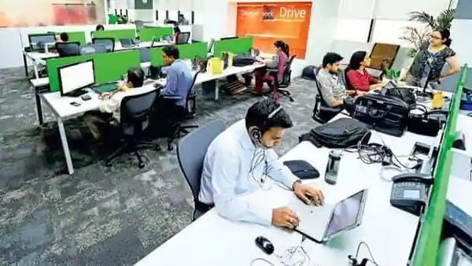

Spike in COVID-19 Cases in Beijing Leaves Workplaces Empty
This spread of COVID-19 is the first significant outbreak
since the beginning of the pandemic. The impact was visible in an upscale shopping district,
where the usually bustling shops and restaurants were practically empty, functioning in some
cases on skeleton crews or offering only takeout. Similar scenes are happening across Beijing,
with offices and shops reporting being understaffed or shifting work arrangements as employees
either have become ill or stayed home to avoid being infected.
The spread of COVID-19 in China is now impossible
to track, the nation's health authorities said,
announcing they have halted recording asymptomatic
cases in their daily tallies. Official state media
outlet China Daily reported Beijing had seen a more
than sixfold increase in COVID-19 cases in hospitals in the last week and 16 times more cases
in fever clinics. Li Ang, deputy director of Beijing Municipal Health Commission, said that on Dec.
9, there were 31,000 calls to emergency medical services, six times more than average.
Can Employers Force Employees to Work From Home?
The red-hot labor market seems to be cooling off. The imperfect storm of
unprecedented inflation, market volatility and a looming recession are causing employers to rethink
their human capital strategies to get ahead of the curve. That said, do not expect to see all those
"Help Wanted" signs coming down everywhere. After all, the unemployment rates in the U.S. and Europe
are still near historic lows despite broader economic concerns. One constant we have seen throughout
the COVID-19 pandemic and the current economic slowdown is that remote working continues to be a key
part of companies' human capital strategy. The pandemic showed many employers that their employees can be just
as productive working from home.
This resulted in some companies making remote work a permanent option. Other
companies have taken the opposite position and publicly stated they want their employees back in the office as
soon as it is safe to do so. If the economic downturn continues, and companies start looking for ways to trim
costs beyond headcount reductions, we expect some of those companies that are already permitting remote working
to eliminate in-office work altogether, thereby eliminating their real estate costs. Though this may seem like
something employees would be largely receptive to, employers must still make sure they understand what their legal
obligations are if they want to mandate remote working, and plan accordingly.
Hiring in India's IT sector shows slight revival: Report
Following months of slowdown in hiring activity,
Indian IT industry is inching towards recovery, albeit slowly, as the industry saw an uptick of 3% in job demand on a month-on-month basis,
as per the latest report published by talent management platform foundit (earlier Monster.com) on job trends for the month of November 2022.
However, compared to a year earlier, when companies were aggressively hiring tech talent with wage hikes, bonus and incentives amidst
high attrition, IT hiring noted a dip of 14% year-on-year, according to the staffing firm.The platform noted a 6% increase in the overall
hiring activity month-on-month for freshers. However, there is a noticeable dip in yearly hiring (3%), it said. Hiring for freshers have
flattened in tech sector, as against banking, financial services and insurance (BFSI) and Fast-moving consumer goods (FMCG), to name a few,
said the hiring firm. Meanwhile, data for jobs posted on the foundit portal showed that the IT sector offers the highest on boarding salary
to freshers, with the range starting from 3,44,922 a year and going up to ₹6,71,236. This is followed by the Logistics sector ( ₹311,474 to ₹5,76,252)
and the BFSI industry ( ₹3,06,102 to ₹5,43,020).
 The spread of COVID-19 in China is now impossible
to track, the nation's health authorities said,
announcing they have halted recording asymptomatic
cases in their daily tallies. Official state media
outlet China Daily reported Beijing had seen a more
than sixfold increase in COVID-19 cases in hospitals in the last week and 16 times more cases
in fever clinics. Li Ang, deputy director of Beijing Municipal Health Commission, said that on Dec.
9, there were 31,000 calls to emergency medical services, six times more than average.
The spread of COVID-19 in China is now impossible
to track, the nation's health authorities said,
announcing they have halted recording asymptomatic
cases in their daily tallies. Official state media
outlet China Daily reported Beijing had seen a more
than sixfold increase in COVID-19 cases in hospitals in the last week and 16 times more cases
in fever clinics. Li Ang, deputy director of Beijing Municipal Health Commission, said that on Dec.
9, there were 31,000 calls to emergency medical services, six times more than average.